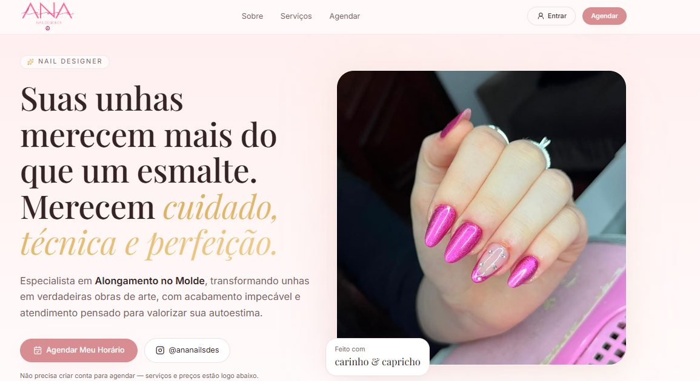

Em formação
Técnico em Desenvolvimento de Sistemas
ETEC — Centro Paula Souza
Desenvolvedor de Sistemas Tecnologia Inovação
Sou Otávio Onishi, Técnico em Desenvolvimento de Sistemas em formação. Desenvolvo sites, aplicações e sistemas personalizados, utilizando tecnologia e criatividade para transformar necessidades em soluções reais.
Meu nome é Otávio Onishi, tenho 19 anos e sou apaixonado por tecnologia, desenvolvimento e criação de soluções digitais.
Atualmente estou concluindo minha formação técnica em Desenvolvimento de Sistemas pela ETEC, instituição do Centro Paula Souza, com previsão de conclusão em dezembro de 2026.
Durante minha trajetória, desenvolvi conhecimentos em programação, banco de dados, desenvolvimento web, integração de APIs e inteligência artificial aplicada à tecnologia.
Também tive experiência profissional como auxiliar de manutenção, onde desenvolvi conhecimentos práticos em elétrica, manutenção e resolução de problemas.
Concluída
Auxiliar de Manutenção
ETEC — Centro Paula Souza
Dezembro de 2026
ETEC — Centro Paula Souza
Formação básica concluída.
Auxiliar de Manutenção — conhecimentos práticos em elétrica e manutenção.
Tecnologias e áreas de atuação que fazem parte do meu dia a dia de estudo e de desenvolvimento.
Estruturação semântica de páginas e conteúdo na web.
Estilização, layouts responsivos e identidade visual das interfaces.
Lógica de programação e desenvolvimento no lado do servidor.
Modelagem e consulta de dados em bancos relacionais.
Uso de IA como ferramenta aplicada ao desenvolvimento de soluções.
Interfaces web modernas, responsivas e centradas na experiência de quem usa.
Regras de negócio, lógica e integrações no lado do servidor.
Modelagem, criação e consulta de bases de dados relacionais.
Soluções completas, adaptadas à realidade e às necessidades de cada negócio.
Conexão entre sistemas, serviços e ferramentas externas.
Uso de inteligência artificial para aprimorar e agilizar o processo de criação.
Conheça alguns dos projetos que desenvolvi, aplicando tecnologia para criar experiências digitais e resolver necessidades reais.

Desenvolvimento de um site profissional para uma profissional da área de beleza, com apresentação de serviços, identidade visual e experiência digital para seus clientes.
Desenvolvo soluções digitais personalizadas para pessoas, profissionais e empresas que desejam fortalecer sua presença online, otimizar processos ou transformar uma ideia em um projeto real.
Sites modernos, responsivos e personalizados para apresentar negócios e fortalecer marcas.
Solicitar orçamentoPáginas estratégicas para apresentar produtos, serviços e gerar oportunidades comerciais.
Solicitar orçamentoPresença digital profissional para empresas, profissionais e organizações.
Solicitar orçamentoDesenvolvimento de sistemas adaptados às necessidades e aos processos de cada negócio.
Solicitar orçamentoPainéis para organizar informações, acompanhar indicadores e facilitar a gestão.
Solicitar orçamentoSoluções para reduzir tarefas manuais, integrar ferramentas e melhorar processos.
Solicitar orçamentoUm processo claro e direto, do primeiro contato até a entrega da solução.
Conversamos sobre sua ideia, necessidade ou problema.
Definimos a melhor solução e estruturamos o projeto.
Transformo o planejamento em uma solução digital funcional.
Apresento o resultado e realizamos os ajustes necessários.
Se você precisa de um site, sistema ou solução tecnológica, estou pronto para conhecer seu projeto.
Quer tirar uma dúvida ou prefere falar direto? Escolha o canal que for mais confortável para você.
Canais diretos para conversarmos sobre o seu projeto — sem compromisso. Seus dados são protegidos conforme a política de privacidade.
Preencha os detalhes abaixo. Quanto mais contexto sobre o projeto, melhor a proposta.